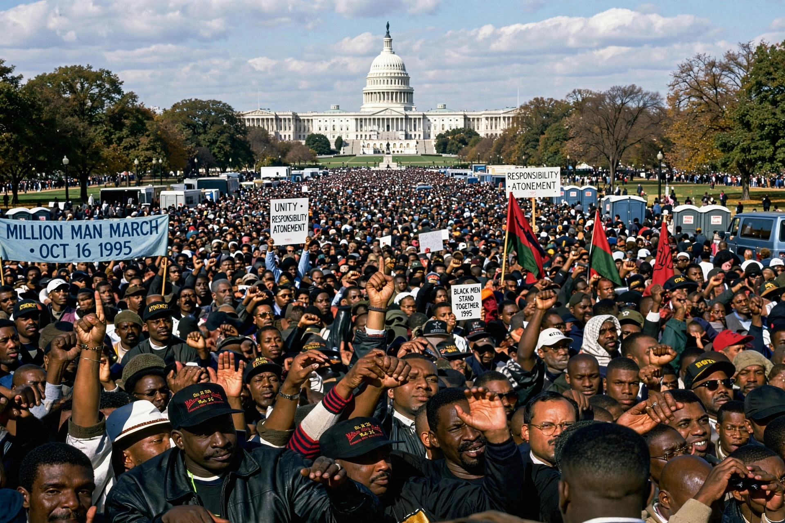

| Million Man March | |
|---|---|
 | |
| Date | 16 October 1995 |
| Location | National Mall, Washington, D.C. |
| Organised by | Louis Farrakhan; Benjamin Chavis Jr. |
| Participants | Estimates from ~400,000 to over 1 million |
The Million Man March was a large gathering of African-American men in Washington, D.C., on Monday, 16 October 1995. Called by Louis Farrakhan, leader of the Nation of Islam, the march took place on and around the National Mall and the steps of the United States Capitol. Its stated purpose was to promote unity, atonement, and personal responsibility among Black men and to call attention to social and economic conditions confronting African Americans.
The march grew out of a series of local organising efforts and the "National African American Leadership Summit." Benjamin Chavis Jr. served as national director. The day's programme of speeches, prayer, and music centred on the themes of atonement, reconciliation, and responsibility, urging attendees to register to vote, join community organisations, and rededicate themselves to their families. Prominent speakers included Jesse Jackson, and Maya Angelou recited a poem.
Attendance estimates became a major controversy. The US Park Police initially estimated about 400,000 attendees; organisers claimed between 1.5 and 2 million. A later study by Boston University's Center for Remote Sensing, commissioned by ABC News, estimated 837,000 ± 20%. The Park Service subsequently stopped issuing official crowd estimates. The dispute over the name "Million Man March" also led to litigation over a trademark claim by Farrakhan's organisation.
The march inspired subsequent gatherings, including the Million Woman March in Philadelphia (1997), the Million Family March (2000), and anniversary events such as "Justice or Else" in 2015 marking the twentieth anniversary. Voter registration drives associated with the march were credited with registering large numbers of new voters.
See also: Louis Farrakhan; Nation of Islam; Million Woman March; Justice or Else.